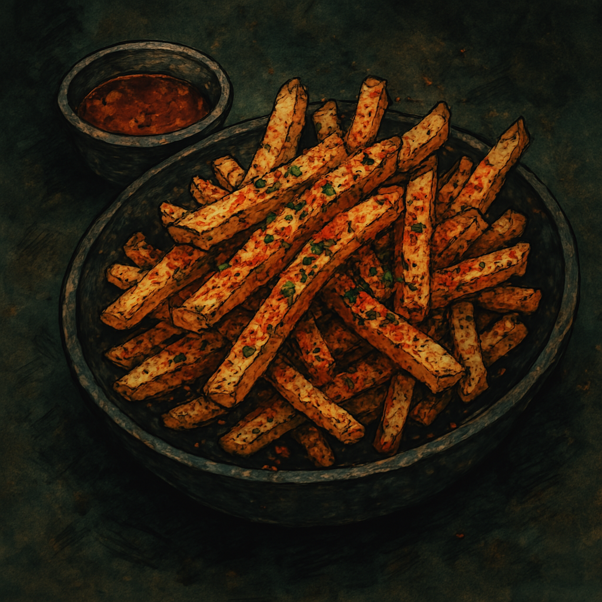

Goblin Grease Fries

Crispy. Garlicky. Probably cursed.
Description
A notorious bar snack served in wax-stained paper cones behind Odin’s cracked counter, Goblin Grease Fries are dangerously addictive. They're fried until they scream, then doused in sizzling garlic oil and coated with inferno salt—a volatile blend of spices rumored to contain crushed fire beetles, dried brimstone flakes, and just a pinch of powdered rage. Greasy, spicy, and absolutely unholy, these fries are known to start bar fights and end hangovers. Eat with caution—and plenty of ale.
Ingredients
For the fries:
- 3 large russet potatoes, cut into thick batons
- Neutral oil (for frying—canola, vegetable, or “troll tallow”)
- Salt for soaking
- 1 tbsp cornstarch (optional, for extra crisp)
For the Goblin Grease (garlic oil):
- 3 tbsp olive oil or neutral oil
- 4 garlic cloves, minced
- Pinch of red pepper flakes
- Optional: 1 tsp smoked paprika or black garlic paste for depth
For the Inferno Salt:
- 1 tsp smoked paprika
- 1/2 tsp cayenne pepper
- 1/4 tsp chili powder
- 1/4 tsp black salt (or regular salt + activated charcoal)
- Optional: 1/8 tsp ground mustard seed or onion powder
- Optional: pinch of edible glitter for that goblin glint
Instructions
- Summon the starch: Rinse and cut your potatoes into thick fries. Soak them in cold salted water for at least 30 minutes to draw out excess starch. Drain, pat dry thoroughly, and toss lightly in cornstarch for maximum crunch.
- Cast the fry spell: Heat your oil in a deep pot or skillet to 350–375°F (175–190°C). Fry the potatoes in batches, making sure not to overcrowd the pan. Cook until golden and crisp—about 4–5 minutes per batch. Drain on paper towels and sprinkle lightly with salt.
- Concoct the Goblin Grease: In a small pan, heat olive oil on low and gently cook the garlic until just golden—do not burn it (goblins hate that). Add red pepper flakes and any optional flavorings. Turn off the heat once fragrant.
- Dust with fire: Mix all Inferno Salt ingredients in a small bowl. Taste and adjust heat levels as needed—goblins like it hot, but you don’t have to. Toss the freshly fried potatoes with garlic oil, then dust generously with inferno salt.
- Serve in something disposable: Plate in a cone of parchment paper, a cracked bowl, or a skull-shaped mug if you’ve got one. Eat fast, while they’re still sizzling. Offer no apologies for the grease.
Home